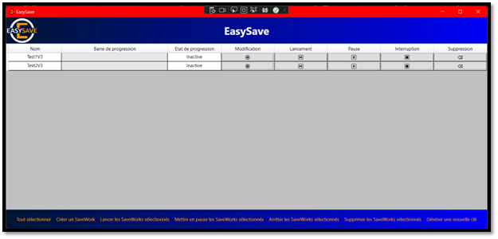

As part of this school project. We have a role -playing game as a project group
Project Title: EasySave
EasySave is a software project developed to provide a comprehensive backup solution. The project has undergone several iterations, each providing enhanced features and functionalities.
Version 1.0: The first version was a console application developed using .Net Core. It allowed users to create up to 5 backup jobs, with specifications for source directory, target directory, and backup type. It supported both English and French languages and recorded all actions in a daily log file.
Version 1.1: An urgent update was required for a major client, resulting in the creation of version 1.1. This version included an additional feature allowing the user to choose the log file format, either XML or JSON.
Version 2.0: The second major update transitioned the application from a console to a WPF-based user interface. This version allowed unlimited backup jobs, introduced file encryption via an external software called CryptoSoft, and added real-time monitoring of ongoing backup tasks. The application would now cease operation if a certain “business software” was detected to be running on the system.
Version 3.0: In the third major update, the application was restructured to execute backup jobs in parallel. It introduced priority handling for file backups, real-time interaction capabilities for backup jobs, temporary pause if a business software was detected running, and a remote monitoring console developed in WPF and communicated via Sockets. This version also enforced a single-instance limitation, preventing the application from being launched multiple times on the same machine.
Throughout all the versions, the project had an emphasis on careful GIT versioning, adherence to UML diagrams, and maintaining high-quality, non-redundant code.
For future updates, potential areas of focus include network load monitoring and automatic adjustment of data flow to avoid saturating the network.
This project offered an extensive exercise in .NET Core development, GUI design, multi-threading, network programming, and real-time system interactions. The EasySave project showcases advanced software development skills and a dedication to continuous product improvement.
constraints: Tools and methods: Visual Studio 2019 version 16.3 or later - Git Azure DevOps. UML editor, with recommended use of ArgoUML. “All your documents and all your code should be managed in these tools.” “Your manager (tutor or course director) must receive an invite to your Git repository to be able to follow your developments.” Language, Framework: C#. Net.Core 3.X library. Code readability and maintainability: English-speaking subsidiaries must be able to use all documents, lines of code and comments. Each function must contain a reasonable number of lines of code. Redundant lines of code should be avoided (pay particular attention when copying and pasting). Compliance with naming conventions. Other constraints: The user documentation should be no longer than one page. There should be a mandatory release note. You are required to manage this project in such a way as to reduce the development costs of future versions and especially to be able to react quickly to any feedback concerning a dysfunction. Version control. Limiting duplicate lines of code as much as possible.
Source: yannsadowski/easysave